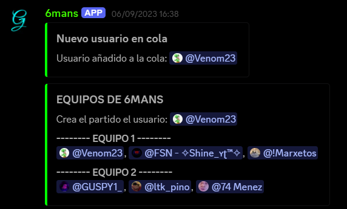
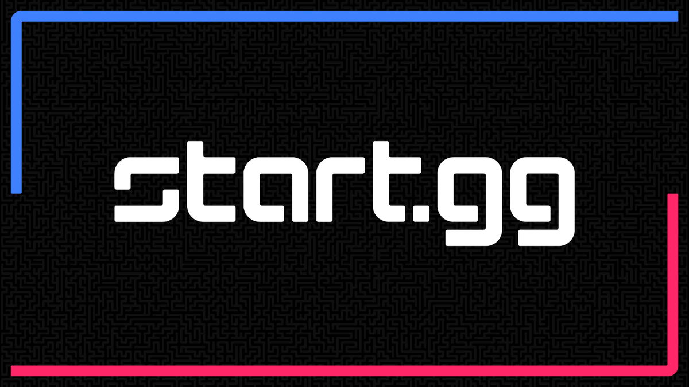

Desarrollo de APIs y aplicaciones del lado del servidor

Si eres streamer de Rocket League, este proyecto es para ti. Este overlay te permitirá ver los kills, asistencias, muertes y más de tu partida en tiempo real, todo ello a la vez que transmities tu partida.

Si quieres sacar todos los datos posibles de cada jugador registrado en un torneo especifico este srapper es el perfecto